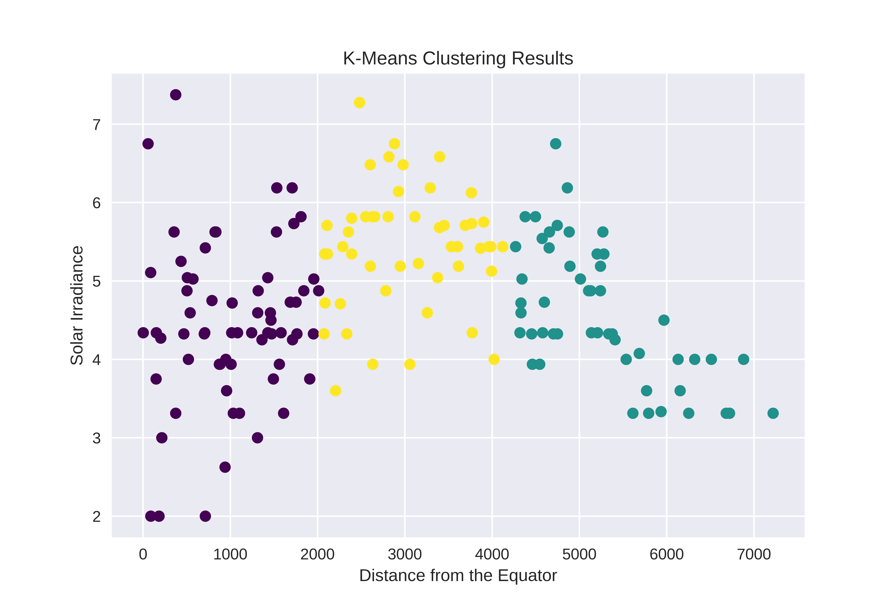

FIRST 1
Photovoltaic systems absorb solar energy (irradiance). Ergo the more irradiance the better their output.
One would think that countries around the equator have the most irradiance since they have the highest temperature however this is false as illustrated here:
Although solar panels absorb energy from the sun, hotter temperatures actually make them less efficient.
FIRST 2
The areas in the chloropleth above are seen here to have low percipitation and so can be identified as deserts, meaning higher output of PV systems comes from those placed in deserts as opposed to those by the equator
FIRST 3
Upon the disproval that countries close to the equator have higher irradiances, this clustering algorithm groups 3 sets of countries on their choice of solar energy adoption:
Closest to equator: Higher spread of irradiance - Ideal to for some, not all
2000-4000Kms from equator: Smaller spread of higher irradiance - Ideal for all
Furthest from equator: Smaller spread of lower irradiance - Ideal for none

Change chloropleth's to have drop-down boxes of temperature, DNI and precipiation
SECOND
One of the main benefits of switching to Solar is to reduce GHG emissions.
Using the graph below, we can see that adoption of solar energy from high emission countries has not occurred but that it has paid off for those who have adopted it like Australia and Chile
Notably, Argentina has a 25% energy generation from all renewables, hence its low emissions, but South Africa as one of the highest GHG emittors is simply found to have low methane emissions as opposed to all other greenhouse gases
THIRD
Countries that consume more energy emit more pollution and so would benefit more from the switch to solar.
In this regression, warmer countries are shown to consume less electricity up until their average temperature exceeds ~23°C where the developed ones can consume more on ventilation and the less-developed majority cannot.
This means that countries on the extremes of temperature would benefit the most from the switch as they can consume environmentally-cleaner energy.
FORTH 1
Adoption of technology is largely connected its cost. This chart shows that as costs of energy decreased, its maximum outputs have increased and this combination drives up its usage
FORTH 2
Add a toggle and have both trellis charts in one AND ALSO USAGE ie %SOLAR
See if you can put regressions and clustering into vega to make them look nicer? Ask ChatGPT
FIFTH
CHANGE TITLE OF THIS REGRESSION
Join this under trellis charts to show how larger costs equals lower use. BUT that lower costs does not mean higher use. Countries not adopting due to other factors such as legislation or development (Find a data on these and plot costs against them to see if lower costs are less developed or if they are have more restrictive legislation OR IF CLIMATE CHANGE SUPPORT ISN'T AS BIG IN THESE COUNTRIES WITH THE COP27 ATTENDEES DATA

SIXTH
This correlation matrix highlights:
Positive relationships between **Electricity Consumption with Entrepreneurship** and with **Solar Energy Costs**
Negative relationships between Distance from equator with Irradiance and Temperature and between **Irradiance and Solar Energy Costs** and between Solar Capacity and Temperature